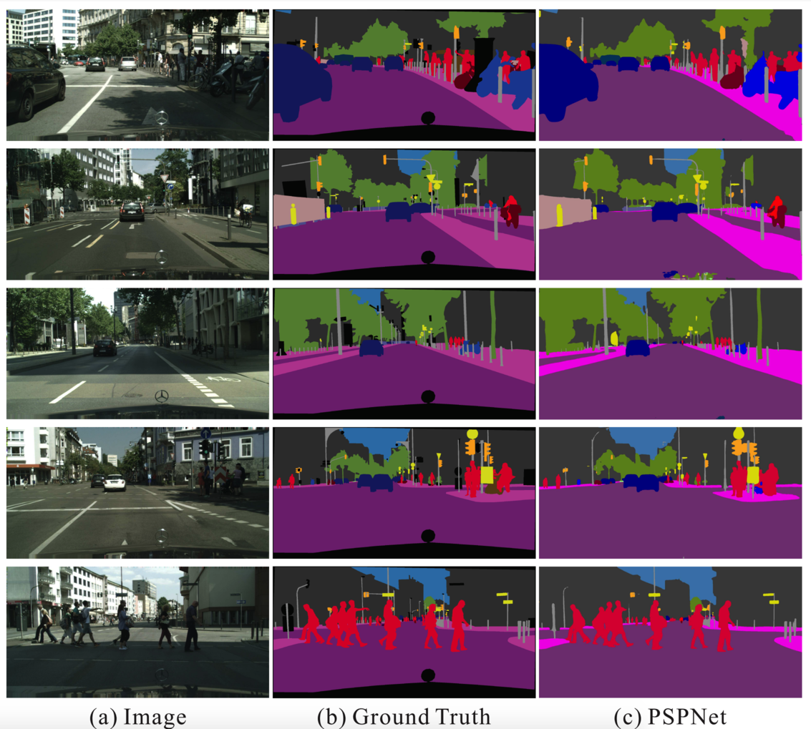
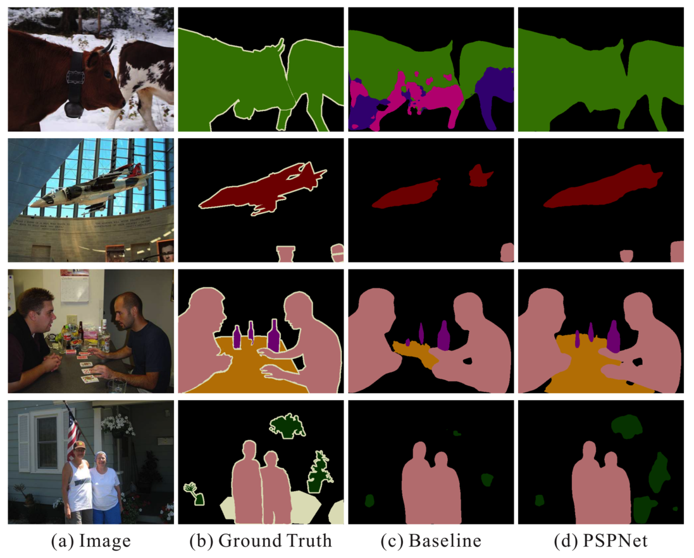

Novelty Overview
Comes up with Pyramid Pooling Module to add more 'context' to per pixel prediction. Adding image as a whole, different subregions as additional context helps improve pixel level scene parsing.
Method
- Processes final feature map from ResNet backend and adds more context to improve segmentation results
- Adds global scene as an aggregated context (1x1xN)
- Image as 2x2 subregions context (2x2xN)
- Divides futher into 3x3 and 6x6
- Going down, the levels contain more spatial relationship information, helps learn object shape better
- Performs 1x1 Conv to reduced channels to 1 and equally weigh all levels before upsampling and concatenation

Improvements
- Adding global context and image subregions as context helps making better predictions
- Row 1 - Reduces out of context errors ('Predicting car on a river')
- Row 2 - Reduces part and part predictions for objects exceeding receptive field ('Part Building, Part Skyscraper')
- Row 3 - Help predict smaller inconspicuous objects (pillow, traffic signs etc)
Auxillary Loss
- During training larger networks, addition of an auxillary loss in the earlier layers helps, improves results
Ablation Studies
- Investigating role of Pyramid pooling module, (B1234) vs only global context (B1)
- Choice of pooling operating, Average (AVE) vs Max (MAX)
- Role of Dimensionality Reduction (DR), 1x1 Conv to reduce channels
- Baseline model being ResNet50 based FCN with dialted network
- Role of Data Augmentation (DA) and Auxillary Loss (AL)
Performance Comparision
- In 2016, achieved SOTA results on all classes in PASCAL dataset
- Compared to other methods, acheives significant improvement on Cityscapes dataset
Results

Results on Cityscapes dataset, really close to ground truth

Results on PASCAL VOC 2012 dataset